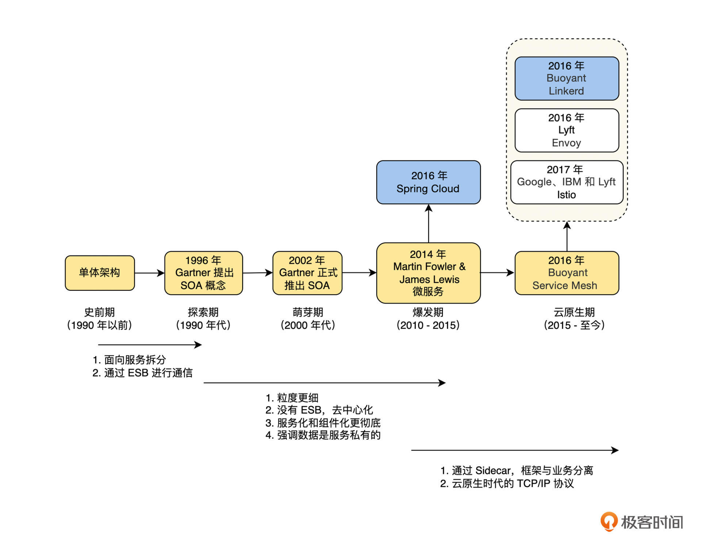

- 00 开篇词 掌握好学习路径，分布式系统原来如此简单.md.html
- 01 导读：以前因后果为脉络，串起网状知识体系.md.html
- 02 新的挑战：分布式系统是银弹吗？我看未必！.md.html
- 03 CAP 理论：分布式场景下我们真的只能三选二吗？.md.html
- 04 注册发现： AP 系统和 CP 系统哪个更合适？.md.html
- 05 负载均衡：从状态的角度重新思考负载均衡.md.html
- 06 配置中心：如何确保配置的强一致性呢？.md.html
- 07 分布式锁：所有的分布式锁都是错误的？.md.html
- 08 重试幂等：让程序 Exactly-once 很难吗？.md.html
- 09 雪崩（一）：熔断，让故障自适应地恢复.md.html
- 10 雪崩（二）：限流，抛弃超过设计容量的请求.md.html
- 11 雪崩（三）：降级，无奈的丢车保帅之举.md.html
- 12 雪崩（四）：扩容，没有用钱解决不了的问题.md.html
- 13 可观测性（一）：如何监控一个复杂的分布式系统？.md.html
- 14 可观测性（二）：如何设计一个高效的告警系统？.md.html
- 15 故障（一）：预案管理竟然能让被动故障自动恢复？.md.html
- 16 故障（二）：变更管理，解决主动故障的高效思维方式.md.html
- 17 分片（一）：如何选择最适合的水平分片方式？.md.html
- 18 分片（二）：垂直分片和混合分片的 trade-off.md.html
- 19 复制（一）：主从复制从副本的数据可以读吗？.md.html
- 20 复制（二）：多主复制的多主副本同时修改了怎么办？.md.html
- 21 复制（三）：最早的数据复制方式竟然是无主复制？.md.html
- 22 事务（一）：一致性，事务的集大成者.md.html
- 23 事务（二）：原子性，对应用层提供的完美抽象.md.html
- 24 事务（三）：隔离性，正确与性能之间权衡的艺术.md.html
- 25 事务（四）：持久性，吃一碗粉就付一碗粉的钱.md.html
- 26 一致性与共识（一）：数据一致性都有哪些级别？.md.html
- 27 一致性与共识（二）：它们是鸡生蛋还是蛋生鸡？.md.html
- 28 一致性与共识（三）：共识与事务之间道不明的关系.md.html
- 29 分布式计算技术的发展史：从单进程服务到 Service Mesh.md.html
- 30 分布式存储技术的发展史：从 ACID 到 NewSQL.md.html
- 春节加餐 技术债如房贷，是否借贷怎样取舍？.md.html
- 春节加餐 深入聊一聊计算机系统的时间.md.html
- 春节加餐 系统性思维，高效学习和工作的利器.md.html
- 结束语 在分布式技术的大潮流中自由冲浪吧！.md.html
- 捐赠
29 分布式计算技术的发展史：从单进程服务到 Service Mesh
你好，我是陈现麟。
通过学习“一致性与共识”系列的内容，我们掌握了一致性模型之间的差异，这让我们能够在工作中，依据自己的业务特点来做最合适的选择。并且我们也明白了什么是共识问题，以及在分布式系统中，共识为什么这么重要。最后，我们深入讨论了一致性、共识和事务之间的联系，通过比较和关联的方法，让你对这些知识建立了网状和系统性的认知。
同时，学习完“一致性与共识”系列课程，也意味着你已经完成了专栏中关于技术原理方面的学习，一路坚持到现在不是一件容易的事情，但是你一定感受到了学习与成长的乐趣，恭喜你！
接下来，我们将开始一段较为轻松，但是非常重要的学习历程。说它轻松是因为，我们不会再深入讨论分布式相关的技术原理，只会系统性地叙述分布式系统的发展历史；而说它重要是因为，虽然我们已经由浅入深地学习，并且网状地分析了分布式系统的技术原理，但是我们构建的知识网络还差最后一个维度，即时间或历史维度，那么在接下来的课程中，我们就一起来完成这画龙点睛的一笔。
从这节课开始，我们将一起花 2 节课的时间，讨论分布式系统的发展历史。这一节课，我们先介绍分布式业务系统的演进历史：从单进程服务到 Service Mesh 。为了让你更好地记忆和理解，我会将这一段演进历史，梳理为 5 个阶段去讨论和总结，具体分别为：史前期、探索期、萌芽期、爆发期和云原生期。
史前期
在分布式系统的史前期，最简单的形式是单进程系统：整个系统只有一个进程，并且运行在一个节点上。单进程系统是非常符合我们直觉的分布式系统的史前期形式，除此之外，还有一种情况也可以归类为分布式系统的史前期，下面我们接着来讨论一下。
对于服务端系统来说，高可用和高性能是无法回避的两个要求，而要达到这两个要求，最简单的方式就是通过多副本来实现：将单进程的程序复制到多台机器上，然后通过负载均衡将流量分发至多台机器上。
但是在这个系统中，多个副本的进程之间是不需要任何通信的，彼此之间也不会感知对方的存在，并且在架构层面，你会发现单进程系统和简单复制的多副本系统，它们都是单体架构，差异只在部署方式上。从严格定义来说，我们可以将这个系统称为集群，但它不是分布式系统。
所以在本课中，我们将单体架构的系统定义为史前期，史前期的时间大约从有计算机程序开始，到 1990 年代之前。
探索期与萌芽期
在史前期，人们通过对单体架构的系统进行集群化部署，解决了业务对高可用和高性能的需求，但是在互联网公司快速发展的过程中，单体架构逐渐在成本和效率方面，暴露出了很多的问题，这部分内容，我们在第 4 讲课程“注册发现”中详细讨论过，这里就不再重复了。
于是，在 1990 年代左右，人们开始探索一种新的架构——分布式业务系统架构，来解决这个问题。在探索的过程中，许许多多的科学家和工程师都贡献了自己的聪明才智，在 1990 年代为分布式业务系统打下了坚实的理论基础，特别是 1996 年 Gartner 公司提出了 SOA 的概念。
基于上述讨论，我认为分布式业务系统架构的探索期为 1990 年度，在这一时期，主要是对 SOA 架构进行探索。
到了 2002 年， Gartner 公司正式推出了 SOA 概念，从此单体架构快速向 SOA 架构迁移，所以在课程中，我们将 2000 年代定义为分布式业务系统架构的萌芽期。
相比于史前期的单体架构来说，探索与萌芽期的 SOA 架构有如下的特点：
- 单体架构所有的逻辑都在一个进程中，而 SOA 架构要求面向服务对业务的逻辑进行拆分。
- 被拆分的多个服务，需要通过 ESB 进行通信。
从此，单体架构慢慢退出了历史的舞台，面向服务进行拆分则变成了一个理所当然的常识。
爆发期
SOA 架构推广后，越来越多的人和公司开始使用 SOA 架构，在使用的过程中，服务的粒度慢慢变得更细，并且慢慢倾向于让不同的服务之间直接通信，而不需要借助 ESB 这样中心化的组件。
终于在 2014 年， Martin Fowler 和 James Lewis 在 SOA 的基础上，提出了微服务的架构。它相比于 SOA 架构来说，具体的差异如下。
- 服务的粒度拆分得更细，更加强调一个服务只做一个事情，并且做到最好。
- 去中心化，服务之间的通信不走 ESB 这样中心化的组件，而是由服务之间直接通信。
- 更加强调复用性，服务化和组件化更加彻底。
- 微服务架构更强调数据是服务私有的，其他服务不能直接访问服务的私有数据，只能通过服务提供的接口来获取。
通过上面的描述，我们可以看到微服务架构比 SOA 架构更加复杂，一个微服务中少则几百个服务，多则上千或更多的服务，所以通过人工运维一个微服务是低效并且不可能的，从此服务治理就开始变成了微服务的标配。关于服务治理相关的技术原理，在本专栏的 “分布式计算”中有非常详细的讨论，这里就不再重复了。
基于上述讨论，我认为分布式业务系统架构的爆发期为 2010 - 2015 年度，在这一时期， SOA 架构逐步被微服务架构所取代，分布式业务系统的架构开始进入微服务时代。 2016 年，开源 Spring Cloud 就是微服务架构的一个经典实现。
云原生期
微服务架构由于在工程上的成本和效率方面，能满足互联网公司快速迭代的需求，所以很快便风靡起来。
但是，从架构上来看，微服务的框架层（比如服务注册发现、熔断降级和负载均衡等）是以 SDK 的形式集成在服务代码中的，而框架层的 SDK 和服务的业务代码，在公司中通常都是由两个团队来开发和维护的：框架层的 SDK 由基础架构团队来开发和维护，业务代码由业务研发团队来开发和维护。
而服务的发布权限在服务的 Owner 业务研发手中，这就使基础架构团队和业务研发团队在程序发布的时候耦合了，基础架构团队想上线新的功能，只能去和业务研发团队沟通，可是业务研发团队的目标在业务上，就导致两个需要紧密协作的团队，出现目标不一致的情况，这是非常影响工作效率的。
所以，在 2016 年 Buoyant 公司提出了 Service Mesh 架构，它在微服务的基础上，做了下面的架构设计优化。
- 不再基于机器进行架构设计，而是直接在云原生基础设施 K8S 的基础上进行架构，这样能直接利用云的弹性能力。
- 将微服务的框架层拆分出来，以一个 Sidecar 的形式，独立部署在服务运行的节点上，通过这个方式来解耦基础架构团队和业务研发团队。
- 最终目标是将微服务的框架层所做的服务治理相关的功能，都抽象到 Sidecar 上，通过 Sidecar 建立云原生时代的 Service Mesh 。
另外，我们将 Service Mesh 定位为云原生时代的 TCP / IP 协议，为了帮助你更好地理解，下面我们就对 TCP / IP 和 Service Mesh 进行一个比较。
首先，是路由能力层面。 TCP / IP 协议在发送数据的时候，通过路由协议，利用网络唯一标识 IP 地址找到所属的计算机节点，而 Service Mesh 通过服务注册发现机制，利用服务的唯一标识来找到服务实例的 IP 列表。
其次，是控制能力层面。 TCP / IP 协议通过慢启动、拥塞控制等一系列的手段，确保网络能够正常运行，而 Service Mesh 通过服务治理中的熔断、降级和限流等机制，确保整个分布式系统正常运行。
通过上面对 TCP / IP 和 Service Mesh 的比较，你会发现它们虽然做的事情不一样，工作的层次不相同，但是工作原理是一样的：TCP / IP 负责将数据包通过网络发送给指定 IP 的主机， Service Mesh 负责将请求通过网络发送给指定的服务，并且它们都会进行流量控制，关心整个网络运行的效率。
对于分布式业务系统架构的云原生期，我认为是从 2015 年 - 至今。在这一时期， Service Mesh 从概念刚刚出现，发展到许多的公司都开始在生产环境中使用，并且出现了许多优秀的开源框架，比如 2016 年 Buoyant 的 Linkerd 和 Lyft 的 Envoy ，2017 年由 IBM 、 Google 和 Lyft 共同推出的 Istio 。

总结
本节课中，我们讨论了分布式业务系统的演进历史，现在我们一起来总结一下。
首先，是 1990 年代以前的史前期，这个时期主要的架构形式是单体架构，为了高可用和高性能，部署形式为集群部署。
然后，是 1990 年代的探索期，为了解决单体架构在研发效率和成本方面的不足，人们开始对分布式系统进行探索，其中的标志性事件是 1996 年 Gartner 公司提出了 SOA 的概念。之后是 2000 年代的萌芽期，在这一时期，SOA 架构正式推出并且在工业界广泛实践。
接着，是 2010 年代 - 2015 年代的爆发期，在这一时期， SOA 架构已经深入人心，同时在 2014 年，基于 SOA 架构进化的微服务架构，被 Martin Fowler 和 James Lewis 提出并推广。
最后，是 2015 年代到现在的云原生期，在云原生期，人们希望微服务架构中的服务治理变成像 TCP / IP 协议一样的网络基础设施，其中的标志性事件是 2016 年 Buoyant 公司提出了 Service Mesh 架构。
到这里，你会发现从历史的发展脉络中，我们可以看到未来的方向，你自然也就明白为什么 Service Mesh 是分布式业务系统中代表未来的架构了。同时，通过增加分布式业务系统中，时间维度的学习后，你对于单体架构、 SOA 、微服务和 Service Mesh 一定也有了更深刻的认识，也就知道如何选择适合公司业务特点的架构了。
思考题
结合本节课对分布式业务系统的演进分析，请你来分享一下，你的公司所使用的架构，并且说一说使用这一架构时遇到了哪些问题？
欢迎你在留言区发表你的看法。如果这节课对你有帮助，也推荐你分享给更多的同事、朋友。
© 2019 - 2023 Liangliang Lee. Powered by gin and hexo-theme-book.